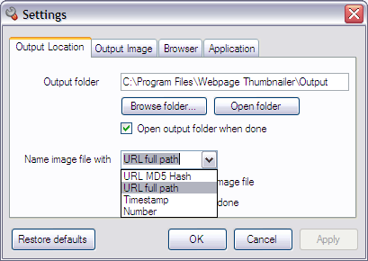
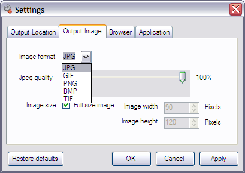
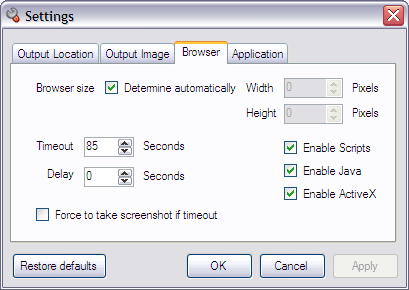
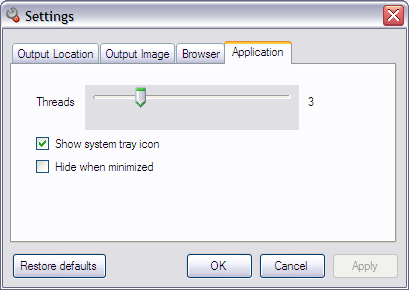

Features
- Convert MHTML and HTML files to images in batch.
Convert your local HTML and MHTML webpages into images in multi threaded batch mode. - Capture websites screenshots.
Take full size screenshots of multiple websites in batch. - Generate thumbnails of webpages.
Create thumbnail images of web pages in any size. - Make schedule to take websites screenshots automatically.
Use command line arguments with windows scheduler to make websites screenshots automatically on scheduled time.
1) For the single webpage (/url)
Example: /url "www.webpagethumbnailer.com/download.html"
2) For the multiple webpages batch processing (/list)
Example: /list "c:\list.txt"
Where the "list.txt" is the text file containing urls of the webpages, one url per line. - Works in background, web page(s) doesn't need to be displayed or kept active to capture.
- Works in multi threaded batch mode, which enables to capture multiple web pages at a time.
- Name output image files with (see above screen) the following methods...
1) URL MD5 hash: md5 hash of full url or file path
2) URL full path: url or file full path
3) Timestamp: timestamp (yyyyMMddhhmmss)
4) Number: list number - Select output image file formats JPG, GIF, PNG, BMP or TIF. (See above screen)
- Supports JPEG quality (compression) percent. (See above screen)
- Selection for full size screenshots or any size thumbnail images. (See above screen)
- Option to determine browser size automatically. (See above screen)
- Options to disable Scripts, Java or ActiveX on the webpages while capturing. (See above screen)
- Supports timeout seconds for the web page to load. (See above screen)
- Supports delayed screenshots: When page loading completed, delay(wait) seconds allows you to take screenshot of the webpage after specified seconds. This option is useful for the page contains ActiveX, Scripts that take time in loading after page has completed the loading. Flash is a good example of an ActiveX control that takes time to load after the page has completed loading. (See above screen)
- Select the number of processes(threads) you want to perform simultaneously. If you select 10, than the process will start capturing 10 items at the same time. If you increase the number of threads, you should increase the value of Timeout seconds.
- Option to show or hide system tray icon for Webpage Thumbnailer.
- Option to hide Webpage Thumbnailer when minimized.



